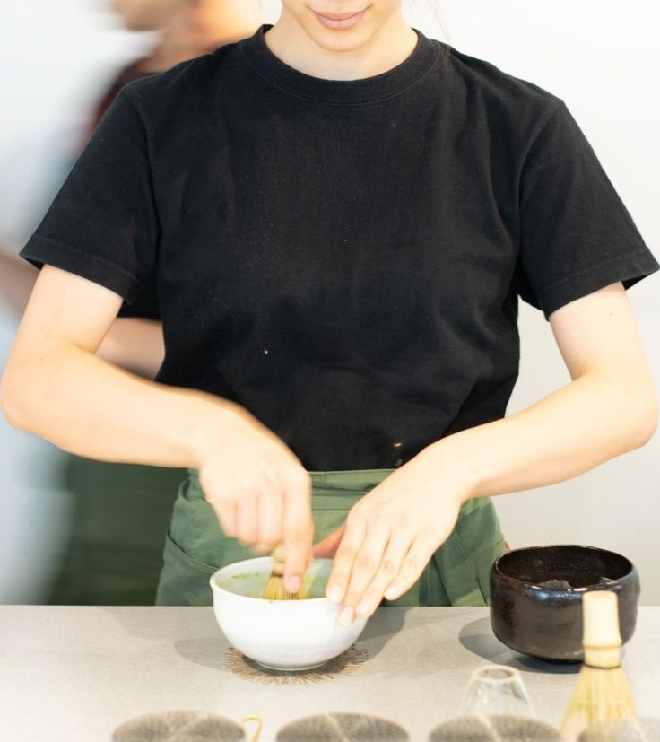
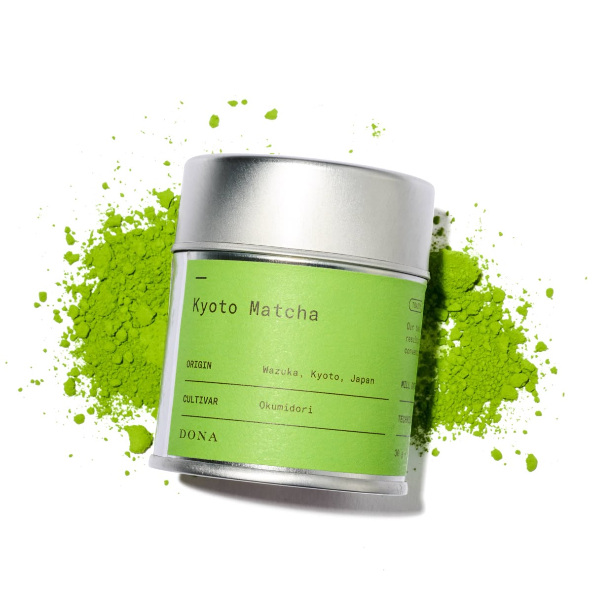

Energy for the new generation
100% Organic Japanese Matcha. No jitters, just focus.
Shop the Drop
About Us

Η ιδέα της επιχείρησης γεννήθηκε από την ανάγκη για έναν χώρο που συνδυάζει ποιότητα, ισορροπία και σύγχρονες συνήθειες ζωής.
Στόχος είναι η δημιουργία ενός φυσικού καταστήματος όπου ο επισκέπτης μπορεί να έρθει σε επαφή με τη matcha σκόνη όχι μόνο ως ρόφημα,
αλλά ως μέρος μιας πιο συνειδητής καθημερινότητας.
Η matcha επιλέχθηκε για τα φυσικά της χαρακτηριστικά, τη σύνδεσή της με την ιαπωνική κουλτούρα και τη φιλοσοφία της απλότητας
και της προσοχής στη λεπτομέρεια. Η διαδικασία προετοιμασίας της αποτελεί έναν τρόπο επιβράδυνσης μέσα στην ημέρα και ενισχύει
την αίσθηση φροντίδας του εαυτού.
Το κατάστημα στην Πάτρα λειτουργεί ως σημείο γνωριμίας με τη matcha, προσφέροντας προϊόντα υψηλής ποιότητας σε έναν σύγχρονο
και φιλικό χώρο. Η ιστοσελίδα έχει ενημερωτικό χαρακτήρα και παρουσιάζει τα προϊόντα και τη φιλοσοφία της επιχείρησης,
χωρίς δυνατότητα online παραγγελίας, δίνοντας έμφαση στη φυσική εμπειρία του καταστήματος.
Η Συλλογή μας Just Arrived
Ανακαλύψτε τα προϊόντα μας αποκλειστικά στο φυσικό μας κατάστημα.

Daily Matcha
Παραδοσιακή Ποιότητα. Ιδανικό για smoothies & latte.
Διαθέσιμο στο κατάστημα

Japanese Matcha
Υψηλής Ποιότητας Κορυφαίου Επιπέδου.
Διαθέσιμο στο κατάστημα

Chasen
Bamboo Whisk.
Διαθέσιμο στο κατάστημα
How to Brew
Προετοίμασε το Matcha ρόφημα σου, άδειασε το κεφάλι σου και είσαι έτοιμος για μια ήρεμη μέρα!
Scoop. Whisk. Sip. Repeat.
- Pure Matcha Mantra
Χρησιμοποιούμε ζεστό νερό περίπου στους 80°C και το χτυπάμε με το bamboo whisk μέχρι να κάνει αφρό σε σχήμα "W".
Τιμοκατάλογος
Ενδεικτικές τιμές για το κατάστημα μας.
Κατάλογος Προϊόντων
| Προϊόν |
Περιγραφή / Ποσότητα |
Τιμή |
| Daily Matcha |
Culinary Grade (100g) |
€15.00 |
| Japanese Matcha |
Ceremonial Grade (75g) |
€28.00 |
| Matcha Set |
Whisk + Bowl + Scoop |
€45.00 |